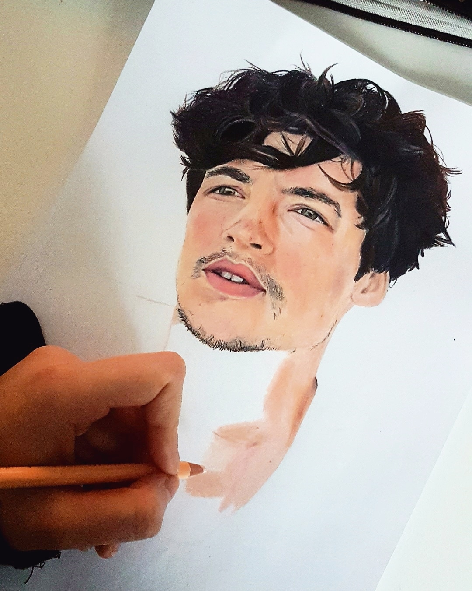

Art Al vanaf kinds af aan ben ik gek op tekenen en dit doe ik nu nog steeds als hobby. Naast tekenen op papier ben ik de laatste tijd ook digitaal gaan tekenen met mijn wacom tablet.  Vorige Volgende
Al vanaf kinds af aan ben ik gek op tekenen en dit doe ik nu nog steeds als hobby. Naast tekenen op papier ben ik de laatste tijd ook digitaal gaan tekenen met mijn wacom tablet.